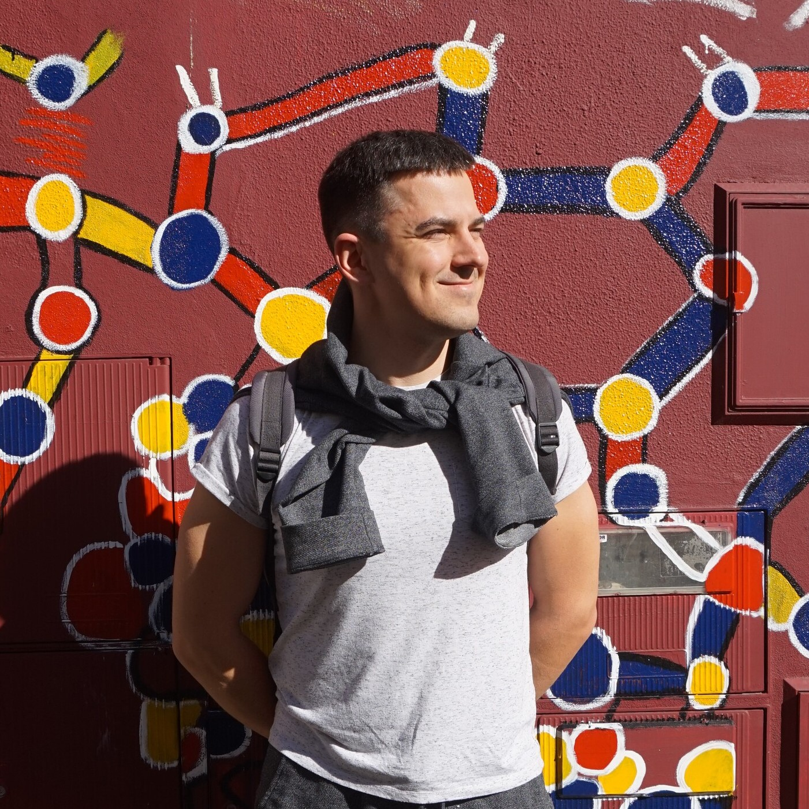

Uladzimir Smouzh
Minsk, Belarus
Mob. +375(29)688-24-04(Viber, Telegram)

Passionate about information technologies, currently switching the field of activity to reach personal developemental goals.
Engeneer at PERI Belarus
2012 - 2014
Senior Engeneer at PERI Belarus
2014 - 2016
Project Manager at PERI Belarus
2016 - 2021
Bachelor of Science, Civil Engineering
Belarusian Technical University, 2009
English proficiency level: B1